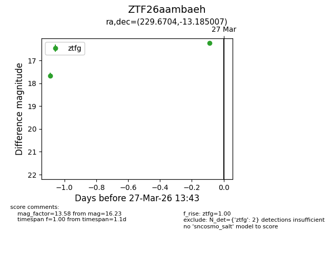
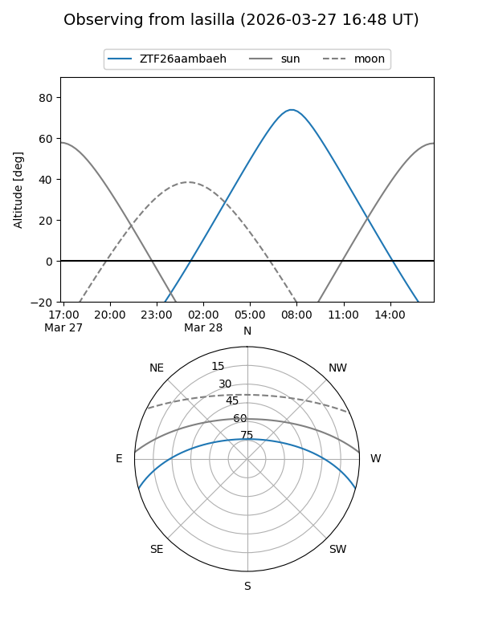
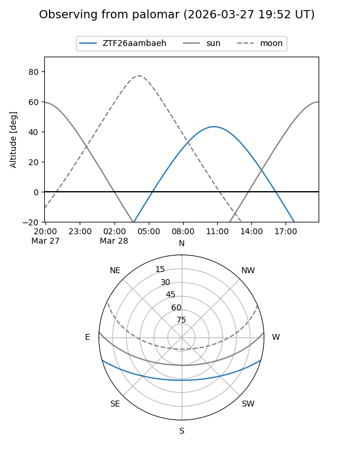

ZTF26aambaeh
Target ZTF26aambaeh at 2026-03-27 13:45
Aliases and brokers:
FINK: link
Lasair: link
ALeRCE: link
alt names
ZTF26aambaeh (ztf,fink_ztf)
Coordinates:
equatorial (ra, dec) = 229.6704,-13.18501
equatorial (HMS+DMS) = 15:18:40.90,-13:11:06.03
galactic (l, b) = (349.1829,+36.13913)
Flags:
Photometry:
last ztfg=16.23
2 ztfg detections
Lightcurve

Visibility


Additional plots